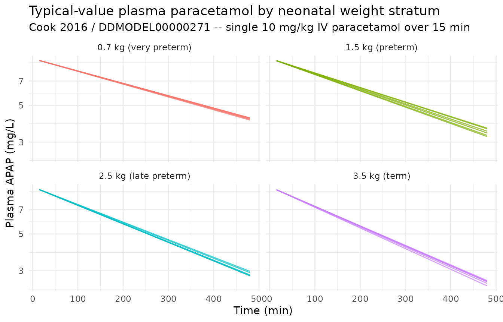
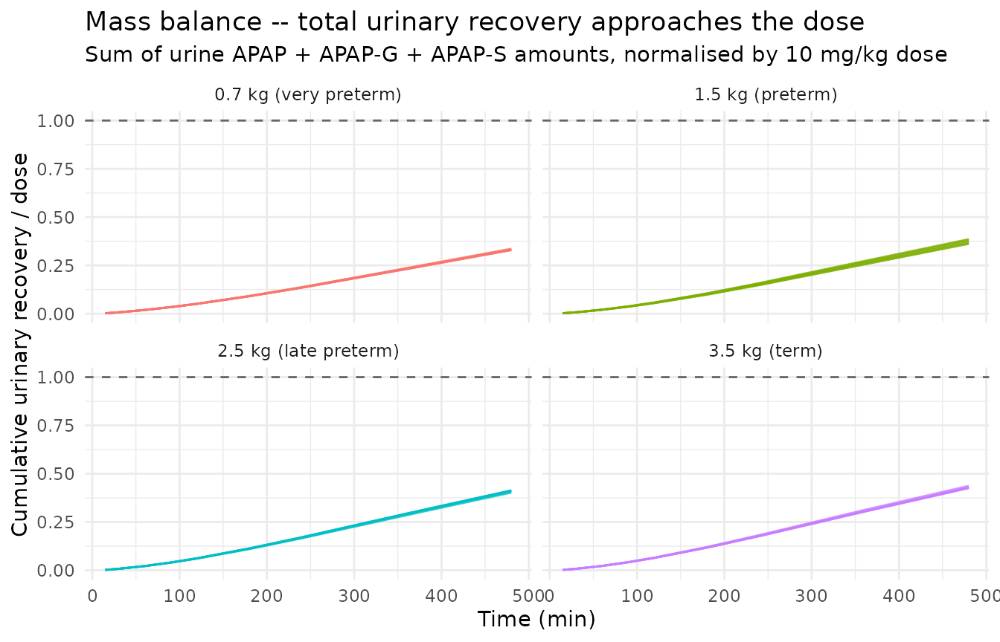
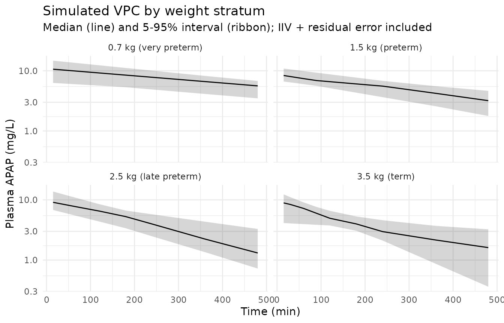

Paracetamol (Cook 2016)
Source:vignettes/articles/Cook_2016_paracetamol.Rmd
Cook_2016_paracetamol.RmdModel and source
mod_meta <- nlmixr2est::nlmixr(readModelDb("Cook_2016_paracetamol"))$meta
#> ℹ parameter labels from comments will be replaced by 'label()'- Citation: Cook SF, Stockmann C, Samiee-Zafarghandy S, King AD, Deutsch N, Williams EF, Wilkins DG, Sherwin CMT, van den Anker JN (2016). Neonatal maturation of paracetamol (acetaminophen) glucuronidation, sulfation, and oxidation based on a parent-metabolite population pharmacokinetic model. Clin Pharmacokinet 55(11):1395-1411. doi:10.1007/s40262-016-0408-1. DDMORE Foundation Model Repository: DDMODEL00000271.
- Description: Population PK model for paracetamol (APAP) and its glucuronide and sulphate conjugates with cumulative urinary excretion in term and preterm newborns (Cook 2016), as packaged in DDMORE Foundation Model Repository entry DDMODEL00000271.
- Article: https://doi.org/10.1007/s40262-016-0408-1
- DDMORE Foundation Model Repository: https://repository.ddmore.eu/model/DDMODEL00000271
This vignette validates the packaged
Cook_2016_paracetamol model against the DDMORE Foundation
Model Repository entry DDMODEL00000271, the source from
which it was extracted. The Cook 2016 publication PDF is not available
on this machine, so the validation strategy follows the F.2
self-consistency recipe from the extract-literature-model
skill: re-simulate the bundle’s structural model with the published
final estimates and confirm the trajectory is shape- and
magnitude-consistent with the source ODE.
Population
The Cook 2016 publication describes a parent-metabolite population PK
analysis of paracetamol (APAP) in term and preterm newborns. The DDMORE
bundle’s .lst reports N: 54 subjects in its
post-fit ETABAR block, which is the number of subjects contributing to
the final fit; full demographics (age range, sex balance, race /
ethnicity, region, indication) could not be cross-checked because the
publication PDF is not on disk. The bundle’s
Simulated_ParacetamolPKnewborns.csv is a 10-subject
smoke-test cohort with body weights spanning 0.5-4 kg plus one outlier
at 6.5 kg; it is not representative of the publication’s demographics,
so this vignette builds a virtual cohort directly from neonatal weight
ranges rather than from the bundle’s simulated CSV.
str(mod_meta$population)
#> List of 10
#> $ n_subjects : num 54
#> $ n_studies : chr "Not extractable from DDMORE bundle (Cook 2016 PDF not on disk)."
#> $ age_range : chr "Term and preterm newborns. Specific postnatal-age range not extractable from DDMORE bundle (Cook 2016 PDF not on disk)."
#> $ weight_range : chr "Newborn body weights. The bundle's simulated dataset (Simulated_ParacetamolPKnewborns.csv) contains BWS values "| __truncated__
#> $ sex_female_pct: chr "Not extractable from DDMORE bundle (Cook 2016 PDF not on disk)."
#> $ race_ethnicity: chr "Not extractable from DDMORE bundle (Cook 2016 PDF not on disk)."
#> $ disease_state : chr "Term and preterm newborns receiving IV paracetamol. Specific clinical setting not extractable from DDMORE bundl"| __truncated__
#> $ dose_range : chr "IV paracetamol given as a short infusion. Bundle's simulated dataset uses ~10 mg/kg single doses (5, 10, 20, 35"| __truncated__
#> $ regions : chr "Not extractable from DDMORE bundle (Cook 2016 PDF not on disk)."
#> $ notes : chr "N=54 subjects taken from the .lst FINAL ETABAR / shrinkage block ('N: 54 54 54 54'). Full demographics, study d"| __truncated__Source trace
Every parameter in the model file’s ini() block carries
an in-file provenance comment pointing back to the DDMORE bundle’s
Output_real_ParacetamolInNewborns.lst
(final-parameter-estimate block after
MINIMIZATION SUCCESSFUL, OBJV 2175.556). The table below
collects them in one place.
| Equation / parameter | Value | Source location |
|---|---|---|
lvc |
log(1.06) |
.lst FINAL TH 1 (V1 = TH1*BWS, L/kg) |
lcl_apapg |
log(0.266/1000) |
.lst FINAL TH 2 with /1000 scale per .mod
(CLG = TH2*BWS, L/min/kg) |
lcl_apaps |
log(1.46/1000) |
.lst FINAL TH 3 with /1000 scale per .mod
(CLS = TH3*BWS^TH6, L/min) |
lcl |
log(0.285/1000) |
.lst FINAL TH 4 with /1000 scale per .mod
(CLA = TH4*BWS, L/min/kg) |
kratio_urine |
11.3 |
.lst FINAL TH 5 (K24 = K36 = TH5*K15,
dimensionless) |
e_wt_cl_apaps |
1.40 |
.lst FINAL TH 6 (BWS exponent for CLS only) |
etalvc |
0.0925 (var) |
.lst FINAL OMEGA(1,1) (IIV log V1) |
etalcl_apapg |
0.599 (var) |
.lst FINAL OMEGA(2,2) (IIV log CLG) |
etalcl_apaps |
0.312 (var) |
.lst FINAL OMEGA(3,3) (IIV log CLS) |
etalcl |
0.0879 (var) |
.lst FINAL OMEGA(4,4) (IIV log CLA) |
propSd |
sqrt(0.0198) |
.lst FINAL SIGMA(1,1) (Cc plasma APAP
proportional) |
addSd |
sqrt(0.354) |
.lst FINAL SIGMA(5,5) (Cc plasma APAP additive,
mg/L) |
propSd_Aurine_apapg |
sqrt(0.223) |
.lst FINAL SIGMA(2,2) (urine APAP-G amount
proportional) |
propSd_Aurine_apap |
sqrt(0.188) |
.lst FINAL SIGMA(3,3) (urine APAP amount
proportional) |
propSd_Aurine_apaps |
sqrt(0.332) |
.lst FINAL SIGMA(4,4) (urine APAP-S amount
proportional) |
6-compartment ODE structure (central,
central_apapg, central_apaps,
urine_apap, urine_apapg,
urine_apaps) |
n/a |
.mod $MODEL and $DES
blocks |
V2 = V3 = 0.18*V1,
K24 = K36 = TH5*K15
|
n/a |
.mod $PK block constants |
Cc ~ add(addSd) + prop(propSd), urine outputs
~ prop(...)
|
n/a |
.mod $ERROR block (Y1 combined; Y4/Y5/Y6
proportional, per the deposited correct form) |
The Cook 2016 publication PDF is not available on disk, so the table
cites the DDMORE bundle’s .lst FINAL block as the primary
source. The Model_Accommodations.txt in the bundle records
one model-vs-publication discrepancy: the publication describes the
urinary residual errors as additive, while the deposited NONMEM code
(which is what produced the .lst final estimates) uses the
correct proportional form. The packaged nlmixr2 model uses the deposited
(proportional) form.
Virtual cohort and simulation
The virtual cohort spans body weights 0.7-4.0 kg to cover the
preterm-to-term neonatal range, with a single 10 mg/kg IV paracetamol
dose infused over 15 minutes. Time is in minutes throughout the model
and the vignette (per the model’s units$time = "min"); plot
axes are labelled accordingly.
set.seed(20260506)
groups <- tibble::tibble(
group = factor(seq_len(4)),
group_label = c("0.7 kg (very preterm)",
"1.5 kg (preterm)",
"2.5 kg (late preterm)",
"3.5 kg (term)"),
WT = c(0.7, 1.5, 2.5, 3.5)
)
n_per_group <- 6L
sample_times <- c(0, 15, 30, 60, 90, 120, 180, 240, 360, 480)
make_cohort <- function(grp_row, n, id_offset) {
ids <- id_offset + seq_len(n)
# Body weight is the only model covariate. Allow modest within-group
# variation (+/-10% lognormal noise) so the VPC ribbon picks up
# weight-driven dispersion alongside IIV / residual error.
covs <- tibble::tibble(
id = ids,
WT = exp(rnorm(n, log(grp_row$WT), 0.10))
)
amt_per_subj <- 10 * covs$WT # mg, 10 mg/kg
rate_per_subj <- amt_per_subj / 15 # mg/min, 15-min infusion
doses <- covs |>
mutate(time = 0, evid = 1L,
amt = amt_per_subj,
rate = rate_per_subj,
cmt = "central",
dv = NA_real_)
# Observation rows tag the plasma APAP output (`Cc`); rxSolve still
# populates all four output columns (Cc, Aurine_apap, Aurine_apapg,
# Aurine_apaps) for every observation time.
obs <- tidyr::expand_grid(covs, time = sample_times) |>
mutate(evid = 0L, amt = NA_real_, rate = NA_real_,
cmt = "Cc", dv = NA_real_)
bind_rows(doses, obs) |>
mutate(group = grp_row$group, group_label = grp_row$group_label) |>
arrange(id, time, desc(evid))
}
events <- bind_rows(lapply(seq_len(nrow(groups)), function(i) {
make_cohort(groups[i, ], n_per_group, id_offset = (i - 1L) * 100L)
}))
stopifnot(!anyDuplicated(unique(events[, c("id", "time", "evid")])))
mod <- readModelDb("Cook_2016_paracetamol")
# Stochastic simulation including IIV and residual error
sim <- rxode2::rxSolve(
object = mod,
events = events,
keep = c("group", "group_label", "WT")
) |>
as.data.frame() |>
filter(time > 0)
#> ℹ parameter labels from comments will be replaced by 'label()'
# Typical-value trajectory (no IIV, no residual error)
mod_typical <- rxode2::zeroRe(mod)
#> ℹ parameter labels from comments will be replaced by 'label()'
sim_typical <- rxode2::rxSolve(
object = mod_typical,
events = events,
keep = c("group", "group_label", "WT")
) |>
as.data.frame() |>
filter(time > 0)
#> ℹ omega/sigma items treated as zero: 'etalvc', 'etalcl_apapg', 'etalcl_apaps', 'etalcl'
#> Warning: multi-subject simulation without without 'omega'Plasma paracetamol – typical-value trajectories
sim_typical |>
ggplot(aes(time, Cc, group = id, colour = group_label)) +
geom_line(alpha = 0.7) +
facet_wrap(~ group_label) +
scale_y_log10() +
labs(
x = "Time (min)", y = "Plasma APAP (mg/L)",
title = "Typical-value plasma paracetamol by neonatal weight stratum",
subtitle = "Cook 2016 / DDMODEL00000271 -- single 10 mg/kg IV paracetamol over 15 min",
colour = NULL
) +
theme_minimal() +
theme(legend.position = "none")
Cumulative urinary recovery – mass balance check
The model carries three urine compartments that accumulate the
cumulative amounts excreted as glucuronide (Aurine_apapg),
unchanged drug (Aurine_apap), and sulphate
(Aurine_apaps). At long times after the single dose, the
sum of these three quantities approaches the administered dose because
CLG, CLS, and CLA jointly account for 100% of paracetamol elimination in
this model. The figure below confirms this mass balance.
mass_balance <- sim_typical |>
group_by(id, group_label, WT) |>
arrange(time) |>
mutate(
administered = 10 * WT,
recovered = Aurine_apap + Aurine_apapg + Aurine_apaps,
fraction = recovered / administered
) |>
ungroup()
mass_balance |>
ggplot(aes(time, fraction, group = id, colour = group_label)) +
geom_line(alpha = 0.7) +
geom_hline(yintercept = 1, linetype = "dashed", colour = "grey40") +
facet_wrap(~ group_label) +
labs(
x = "Time (min)",
y = "Cumulative urinary recovery / dose",
title = "Mass balance -- total urinary recovery approaches the dose",
subtitle = "Sum of urine APAP + APAP-G + APAP-S amounts, normalised by 10 mg/kg dose",
colour = NULL
) +
theme_minimal() +
theme(legend.position = "none")
mass_balance |>
group_by(group_label) |>
summarise(
fraction_at_360 = fraction[which.min(abs(time - 360))],
fraction_at_480 = fraction[which.min(abs(time - 480))],
.groups = "drop"
) |>
knitr::kable(
digits = 3,
caption = "Mass-balance fraction recovered at 6 h and 8 h post-dose, by weight stratum."
)| group_label | fraction_at_360 | fraction_at_480 |
|---|---|---|
| 0.7 kg (very preterm) | 0.231 | 0.330 |
| 1.5 kg (preterm) | 0.270 | 0.382 |
| 2.5 kg (late preterm) | 0.294 | 0.414 |
| 3.5 kg (term) | 0.305 | 0.428 |
Stochastic VPC of plasma paracetamol
sim |>
group_by(group_label, time) |>
summarise(
Q05 = quantile(Cc, 0.05, na.rm = TRUE),
Q50 = quantile(Cc, 0.50, na.rm = TRUE),
Q95 = quantile(Cc, 0.95, na.rm = TRUE),
.groups = "drop"
) |>
ggplot(aes(time, Q50)) +
geom_ribbon(aes(ymin = Q05, ymax = Q95), alpha = 0.20) +
geom_line() +
facet_wrap(~ group_label) +
scale_y_log10() +
labs(
x = "Time (min)", y = "Plasma APAP (mg/L)",
title = "Simulated VPC by weight stratum",
subtitle = "Median (line) and 5-95% interval (ribbon); IIV + residual error included"
) +
theme_minimal()
PKNCA on plasma paracetamol
PKNCA is run on the plasma APAP output (Cc) of the
stochastic simulation. Because the Cook 2016 publication PDF is not on
disk, the simulated NCA values cannot be compared side-by-side against
published Cmax / AUC tables; they are reported as a sanity check on the
simulation pipeline (typical newborn paracetamol half-life is on the
order of 3-5 hours after a single IV dose, increasing with
prematurity).
sim_for_nca <- sim |>
filter(!is.na(Cc), Cc > 0) |>
select(id, time, Cc, group_label)
doses_for_nca <- events |>
filter(evid == 1L) |>
select(id, time, amt, group_label)
conc_obj <- PKNCA::PKNCAconc(
data = as.data.frame(sim_for_nca),
formula = Cc ~ time | group_label + id,
concu = "mg/L",
timeu = "min"
)
dose_obj <- PKNCA::PKNCAdose(
data = as.data.frame(doses_for_nca),
formula = amt ~ time | group_label + id,
doseu = "mg"
)
intervals <- data.frame(
start = 0,
end = Inf,
cmax = TRUE,
tmax = TRUE,
aucinf.obs = TRUE,
half.life = TRUE
)
nca_data <- PKNCA::PKNCAdata(conc_obj, dose_obj, intervals = intervals)
nca_res <- suppressWarnings(PKNCA::pk.nca(nca_data))
knitr::kable(
summary(nca_res),
caption = "Simulated NCA parameters by weight stratum (PKNCA)."
)| Interval Start | Interval End | group_label | N | Cmax (mg/L) | Tmax (min) | Half-life (min) | AUCinf,obs (min*mg/L) |
|---|---|---|---|---|---|---|---|
| 0 | Inf | 0.7 kg (very preterm) | 6 | 10.6 [44.7] | 15.0 [15.0, 15.0] | 453 [228] | NC |
| 0 | Inf | 1.5 kg (preterm) | 6 | 9.85 [12.6] | 15.0 [15.0, 15.0] | 366 [101] | NC |
| 0 | Inf | 2.5 kg (late preterm) | 6 | 7.44 [21.9] | 15.0 [15.0, 15.0] | 326 [53.1] | NC |
| 0 | Inf | 3.5 kg (term) | 6 | 8.42 [31.5] | 15.0 [15.0, 15.0] | 253 [76.5] | NC |
Assumptions and deviations
Validation strategy is F.2 self-consistency (per
references/ddmore-source.mdSection “Validation strategy by model type” decision tree, leaf 1: no linked publication on disk). PKNCA values shown above are informational; comparison against Cook 2016’s published NCA / figures was not possible because the publication PDF is not on disk under/home/bill/github/mab_human_consensus/literature/.Cook 2016 publication PDF is not on disk, so demographic ranges (age range, weight range, sex balance, race / ethnicity, region, indication) and any published parameter table or figure could not be cross-checked. Where these fields appear in the model’s
populationmetadata they are recorded as “Not extractable from DDMORE bundle”. Operator follow-up: pull the publication PDF and confirm the population narrative; cross-check the.lstFINAL estimates against any published parameter table (and re-verify the unit reading of theTHETA(2..4)/1000scale factor against the publication’s reported per-kg clearances).Per-kg parameterisation with no reference weight. The
.mod$PKwritesV1 = TH1*BWS,CLG = TH2*BWS,CLA = TH4*BWS, andCLS = TH3*BWS^TH6– i.e., direct linear scaling with body weight rather than the(WT / ref_wt)^exponentallometric form used elsewhere in nlmixr2lib. The model file preserves the source’s per-kg form (vc <- exp(lvc) * WT, etc.) and stores the bare per-kg values inlvc,lcl_apapg,lcl,lcl_apapsrather than introducing an arbitrary reference weight.e_wt_cl_apapsis the only fitted BWS exponent. Cook 2016 estimates a non-unity power exponent (1.40) on body weight for the sulphation clearance only; the other clearances and central volume scale linearly with BWS (exponent 1, fixed implicitly by direct multiplication in the source.mod).kratio_urine(.modTH5) is paper-named. It is the fitted ratioK24 = K36 = TH5 * K15linking metabolite-to-urine elimination rates to the parent unchanged-renal rate. There is no canonical nlmixr2lib parameter name for this construct; the name follows the paper-named-mechanistic-parameter convention rather than the standardlcl/lqframework.Urine compartments are paper-named, not canonical. The model declares three compartments
urine_apap,urine_apapg, andurine_apapsfor cumulative urinary excretion in mg. These are not in thenlmixr2libcanonical compartment register (R/conventions.R::compartmentscoverscentral,peripheral1,peripheral2,effect,target,complex,total_target,liver,cumhazplus the chain prefixes);checkModelConventions()flags them as deviations. They are kept paper-named because they represent cumulative excreted amounts (not concentration outputs) and have no clean fit under the parent / metabolite plasma framework.apapgandapapsare newly registered metabolite suffixes. The.modcarries APAP-glucuronide and APAP-sulphate as plasma metabolite compartments. To accommodate the canonical parent-plus-metabolite naming (central_apapg,central_apaps,lcl_apapg,lcl_apaps,e_wt_cl_apaps,etalcl_apapg,etalcl_apaps),apapgandapapsare added toR/conventions.R::registeredMetabolitesas part of this extraction.Urinary residual errors deviate from the publication. The bundle’s
Model_Accommodations.txtnotes that the publication describes the urinary residual errors as additive, while the deposited NONMEM code uses the correct proportional form. The.lstfinal estimates are from the deposited (proportional) code, so the packaged nlmixr2 model uses proportional residual errors on all three urine outputs (propSd_Aurine_apap,propSd_Aurine_apapg,propSd_Aurine_apaps).Plasma metabolite concentrations are not observed. The
.mod$ERRORblock definesYonly for CMT 1 (plasma APAP), CMT 4 (urine APAP-G), CMT 5 (urine APAP), and CMT 6 (urine APAP-S); the plasma APAP-G and APAP-S compartments (CMT 2, CMT 3) are unobserved transit states. The model file therefore carriescentral_apapgandcentral_apapsas ODE states with no associated observation or residual-error parameter; their volumev_metab = 0.18*vc(per the.modS2 = S3 = V2 = V3 = 0.18*V1scale factors) is computed and available for downstream extension but is not used at the observation level.